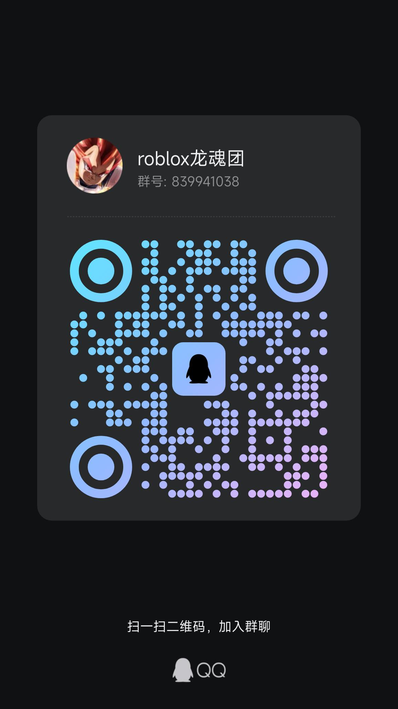
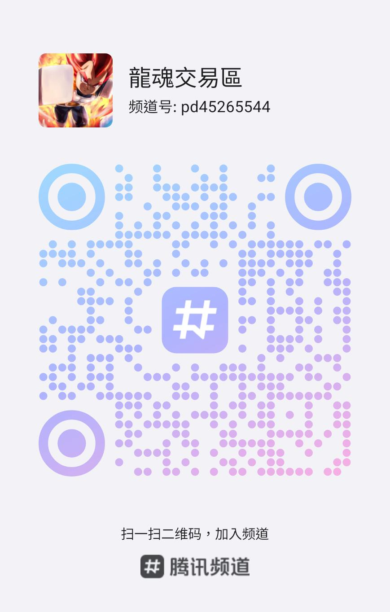

光环分为可获得和绝版两类：
可获得光环又分为能加统计数据和装饰两种：
游戏中等级信息如下：
其他升级方式： 完成以上两种方式后，若还需升级，只能前往北极出生点往上打红色幽灵，升级速度缓慢。
游戏中的 Boss 信息如下：
碎片分为两种类型：灵魂碎片和属性碎片。
属性碎片可以增加角色属性，并有不同的品质，品质从低到高依次为：绿色、蓝色、紫色、金色、彩色 (彩色品质最高)。
蓝色碎片目前没有有用的效果。
紫色碎片目前没有有用的效果。
灵魂碎片的获取方式，请参考网上攻略：B站灵魂碎片攻略视频
灵魂是游戏中重要的能力提升方式，拥有不同的品质和效果。
灵魂品质由低到高分为：一星灵魂、二星灵魂、三星灵魂、四星灵魂、五星灵魂。
一星灵魂和二星灵魂是最基础的灵魂，杀伤力极低，实用性不高。
三星灵魂中，最强大的灵魂是 时间之魂 (希特的闪时)：
其他三星灵魂此处不做过多介绍。
四星灵魂分为两种类型：变身灵魂 和 输出灵魂。
五星灵魂目前仅有三种，均为 变身灵魂：
注意： 部分灵魂为活动限定灵魂，已经绝版，无法获得。
灵魂分为普通和永久两种类型：
要将普通灵魂变为永久灵魂，需要在商店购买 佩尔马永久石 并绑定到灵魂上。灵魂品阶越高，所需的佩尔マ永久石価格越高。
注： 所有灵魂在获得时都是普通的，需要购买佩尔マ永久石才能变为永久灵魂。
提升战力是游戏的核心目标之一，以下是一些提升战力的主要方式：
选择合适的战斗风格也能显著提升战斗力。最强的战斗风格包括：
注意： 部分活动期间的战斗风格为限定，目前可能无法获得，例如圣诞节拐杖、万圣节镰刀等。
完成主线剧情后，约十分之九的进度即可解锁最强形态：传说中的超级赛亚人 (传超)。
属性点的正确分配也能提升战力。官方认证的最佳属性点分配方案为：
合适的装备也是提升战力的重要组成部分。装备 progression 推荐：
提升 PVP 技巧也能有效变强，以下是一些 PVP 技巧练习建议：
通行证提供多种实用道具和增益，助力玩家在游戏中更好地成长。以下是通行证包含的主要内容：
购买不同的通行证捆绑包，还会额外赠送服装、技能和战斗风格：
注意： 购买以上三个通行证捆绑包均会赠送对应的战斗风格，黑悟空捆绑包赠送两种战斗风格，其他两个捆绑包各赠送一种战斗风格。
欢迎加入官方 QQ 群，与更多玩家交流游戏心得，群号：839941038。
您也可以扫描下方二维码加入群聊：

(请使用QQ扫描二维码加入群聊)
欢迎加入官方 QQ 频道，获取最新的游戏资讯和攻略，频道号：pd45265544。
您也可以扫描下方二维码加入频道：

(请使用QQ扫描二维码加入频道)
频道名称: 龍魂交易區 (Dragon Soul Trading Zone)
平台: 腾讯频道 (Tencent Channel)